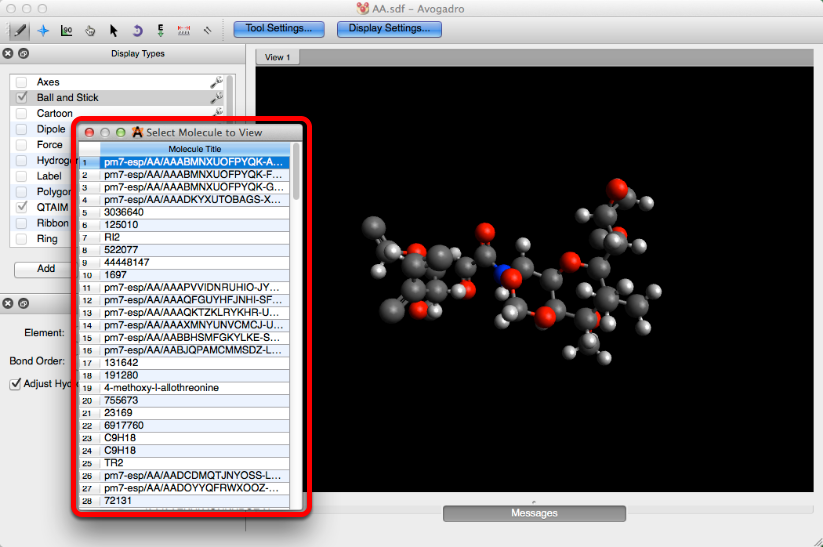

View Menu#
The view menu gives the user the ability to add, and adjust the display views currently in use.

New View#
“New View” creates a new, blank viewing window.
Duplicate View#
By selecting “Duplicate View” from the drop down bar, a duplicate of the current view will be created. Any changes made to the display window will automatically update in all of the views.

Detach View#
The “Detach View” selection will display the current view in a new window.

Close View#
“Close View” deletes the display that’s open. A view can also be closed by clicking the x on the left of the view tab.

Center#
“Center” will align the molecule(s) to the middle of the viewing screen.
Align View to Axes#
“Align View to Axes” adjusts the display view to be in the x, y plane with the positive z-axis pointing toward you.

Full Screen#
“Full Screen” expands the window to fill the computer screen.
Reset Display Types#
“Reset Display Types” will deselect all display types checked, and revert back to the default “Ball and Stick” display type.

Set Background Color…#
The “Set Background Color…” feature will allow you to change the background color of the viewing window.

Projection#
There are two types of projection features (prospective, and orthographic projection), the default projection is perspective projection. Perspective projection provides a more realistic (3D) view of a molecule in space. Orthographic projection provides, and adjusts the molecule into a planar (2D) view, where all like atoms are adjusted to stay the same size. The projection views are most evident when drawing molecules.
Display Axes#
“Display Axes” will render an axes display in the lower left hand corner.

Debug Information#
“Debug Information” provides additional information about the view, and what’s currently taking place on your screen.

Use Quick Render#
Quick render adjusts the 3D molecular image in the viewing screen to achieve a faster image rendering on slow computers. On most modern (2012 or later) computers, this is not necessary.
All Molecules in File…#
“All Molecules in File…” allows you to look at all of the molecules that have previously been created and embedded into one file. From the dialog box that pops up, you can select and edit a molecule by clicking on the molecule’s title.

Crystal View Options…#
“Crystal View Options…” when selected will open the toolbar shown below. This toolbar allows you to edit the Miller indices, and the Unit Cell for any crystal structure.

Properties#
The “Properties” selection will provides you with molecule, atom, bond, angle, torsion, and conformer properties. These settings display general compository information about the molecule and atoms present.

For example, clicking on “Molecule Properties” will display general molecular information.